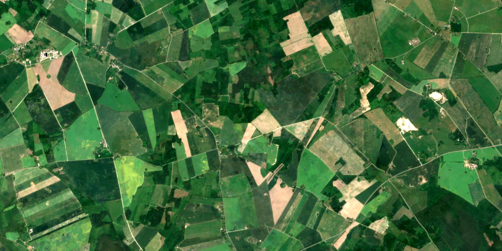

Geospatial Foundation Models for Transparent Agricultural Monitoring under Label‑Scarce Conditions
David Reyes · MSc thesis, M-GEO 2026–2027, GEO-AI track · ITC, University of Twente
Supervisors: Dr. Mahdi Farnaghi (first) and Dr. Mariana Belgiu (second)
The target system. A user supplies an area of interest. The system returns a pixel-level crop segmentation of that area, pixel-level explanations of why each region was classified as it was, calibrated per-pixel confidence, and an LLM-written report traceable to that evidence.

Sentinel-2 · June 2021EuroCrops labels · 2021Fields in Estonia, 13.4 × 6.7 km at 10 m: eighteen chips of the Phase 1 chip set. Left of the line, the monthly Sentinel-2 composite every model reads; right of it, the EuroCrops 2021 parcel labels the models learn to map, shown merged into seven crop groups. Move the line to compare.
- grassland
- winter cereals
- spring cereals
- rapeseed
- legumes and fodder
- maize
- potatoes and vegetables
- no label
Three phases
From satellite time series to a report a person can check: Phase 1 maps the crops with frozen foundation models, Phase 2 explains the maps and says how sure they are, Phase 3 writes the report from that evidence. Phase 1 is the active workstream; Phases 2 and 3 are planned well enough to keep it compatible with them.
- RQ1How few labelled parcel polygons per class are required for GFM-based crop segmentation to match a raw-feature baseline?
- RQ2.1Can explainability methods identify the spectral and temporal information used by GFM-based crop segmenters?
- RQ2.2Can uncertainty quantification methods deliver reliable, calibrated confidence estimates?
- RQ2.3Do the explanations and confidence estimates agree with the raw-feature baseline and with agronomic knowledge?
- RQ3Can XAI-derived information serve as effective structured context for an LLM generating agricultural monitoring reports?